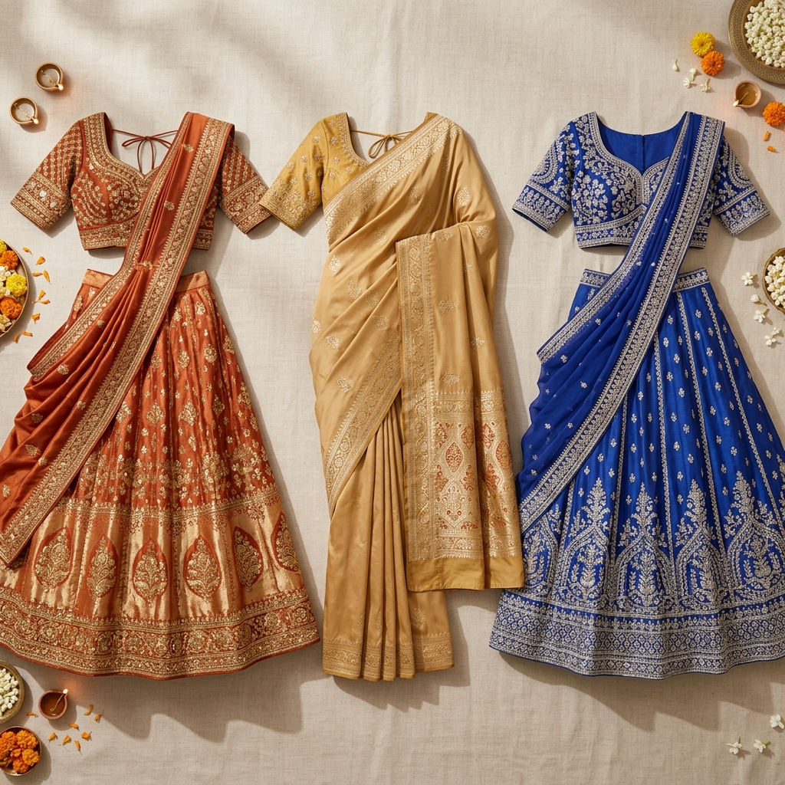

Last updated: July 14, 2026
Which Colour Suits You for Diwali? A Guide by Skin Tone
Quick answer: For Diwali, warm undertones shine in gold, rust, deep orange, and maroon; cool undertones shine in jewel tones like emerald, sapphire, and magenta; neutral undertones can wear almost any festive colour, with deep jewel tones photographing especially well under diya and fairy lights.

Why Festive Lighting Changes the Rules Slightly
Diwali outfits are worn under warm, golden lighting — diyas, fairy lights, string lights — which is different from daylight. Warm lighting naturally amplifies warm colours and can mute cool ones slightly, so if you're cool-toned, leaning into more saturated jewel tones (rather than pastel cool shades) usually photographs and reads better on the night itself.
By Undertone
Warm undertone: Gold, rust, deep orange, mustard, maroon. These colours already share DNA with the lighting itself, creating a glow rather than a clash.
Cool undertone: Emerald green, sapphire blue, magenta, deep wine. Go saturated rather than pastel — a soft cool pastel can look washed out next to warm firelight.
Neutral undertone: You have the most flexibility here — both the warm and cool lists above will work, with deep jewel tones being an especially safe, photogenic choice.

By Skin Depth
- Fair skin: rich jewel tones create striking contrast rather than fading into the skin
- Wheatish/medium skin: gold, turquoise, and mustard tend to look especially vibrant
- Dusky and deep skin: bold saturated colour is a genuine strength — fuchsia, cobalt, and deep maroon look luxurious rather than overwhelming
Colours Worth Approaching Carefully
Very pale pastels can get lost entirely under warm indoor lighting and in flash photography, regardless of undertone — if you love a pastel, consider it for daytime celebrations rather than the evening puja or party.
Don't Forget Gold vs Silver Jewellery
Match your metal to your undertone, not just the outfit colour — warm undertones generally glow more in gold jewellery, cool undertones in silver or platinum, and this matters more under festive lighting than on an ordinary day.
FAQ
What if I don't know my undertone yet?
Use the vein test (greenish veins = warm, bluish = cool) or the jewellery test (gold vs silver, whichever brightens your face) — both take under a minute.
Can I mix warm and cool jewel tones in one outfit?
Yes, especially if you're neutral-toned — a warm base with a cool dupatta, or vice versa, can work well as long as one colour is clearly dominant.
Is gold jewellery the safest choice for everyone at Diwali?
Not necessarily — it's the safest choice for warm and neutral undertones, but cool undertones often look brighter and fresher in silver or white gold, even for festive occasions.
Don't have the right festive colour in your wardrobe yet? [Colourity can show you what to shop for →](https://colourity.com)